Çalış.
Kaydet.
Geliş.
ImberGym spor salonu, ev ve açık hava için antrenman günlüğün: programlar, animasyonlu egzersizler, rekorlar ve istatistikler, ayrıca Trackshow'lu GPS turları, beslenme ve takviyeler. Hesap yok, bulut yok: verilerin telefonunda kalır.
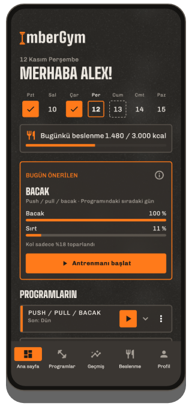
ImberGym neler yapar
Programlar ve şablonlar
Günler, setler, tekrarlar ve dinlenmelerle kendi programların veya hazır şablonlar: başlangıç tüm vücuttan push/pull/bacağa, kalistenik ve yogaya kadar. Her gün için canlı süre tahmini.
Programları QR kodla paylaş
Tüm program bir QR koda sığar: antrenman arkadaşın tarar ve anında sahip olur. Sunucu yok, hesap yok.
Antrenman sırasında
Sayfa başına bir egzersiz, son değerler hazır, ilerleme önerileri, süpersetler, kayıtlı alet ayarları. Dinlenme sayacı kilit ekranında da: kapatılabilir, seçtiğin sinyalle (gong, çan, düdük…) ve isteğe bağlı titreşimle.
Animasyonlu egzersizler
259 egzersizin her biri hareketini bir figürle, çalışan kasları, temposu ve teknik ipuçlarıyla gösterir.
Rekorlar
Maksimum ağırlık, tahmini 1RM, hacim, tekrar, mesafe ve tempo: setten hemen sonra “Yeni rekor!”.
İstatistikler ve vücut haritası
Değişimle birlikte hafta, ay veya 3 ay, kas grubuna göre dağılım, toparlanmalı vücut haritası, egzersiz bazında gelişim ve paylaşılabilir haftalık ve yıllık özetler. Tüm antrenmanlar aylara göre, program ve egzersize göre filtrelenebilir.
Saatten ve banttan nabız
ImberGym saatinin nabzını her antrenman için Health Connect üzerinden alır. Bluetooth göğüs bandıyla antrenman sırasında canlı görürsün, nabız bölgeleri ve nabza göre dinlenmeyle.
Birden fazla salon
Antrenman yaptığın yerleri ekle: ImberGym başlarken nerede olduğunu tanır ve salonu geçmişte ve takvimde gösterir.
Vücut
7 günlük ortalamalı kilo ve yağ oranı, Health Connect ile doğrudan tartından da. Aynı poz için üst katmanlı gelişim fotoğrafları ve önce/sonra karşılaştırması; fotoğraflar uygulamanın içinde kalır.
Beslenme
Tek dokunuşla eklenen 1.200'den fazla çevrimdışı yiyecek. Barkod tarayıcı (Open Food Facts), porsiyon hesaplamalı tarifler ve istersen aktiviteye göre dinamik kalori hedefi. Tamamen kapatılabilir.
Takviyeler
Kendi ürünlerin alışılmış miktar, “Alındı” düğmesi, takvim ve seçtiğin günlerde hatırlatıcılarla – doz önerisi olmadan.
Takvim, yedekleme ve içe aktarma
İstersen antrenmanlar cihaz takviminde. Telefon değiştirmek için yedekleme, Strong ve Hevy'den içe aktarma, CSV dışa aktarma.
Tabata ve interval
Tabata, HIIT, 30/30 veya EMOM: hızlı başlangıç veya programında bir blok olarak. Büyük geri sayım ve her geçişten önce sinyal, telefon kilitliyken bile.
ImberGym'den görüntüler
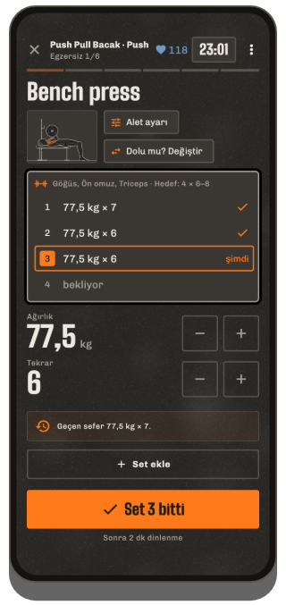
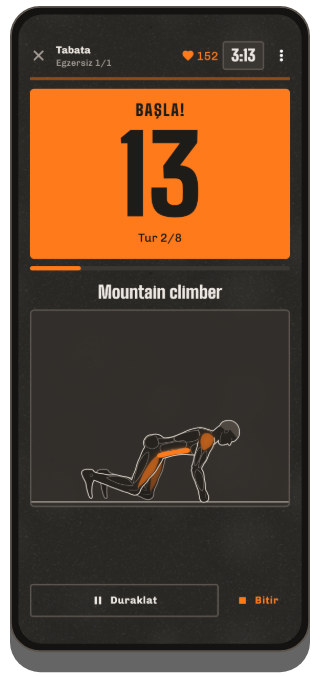
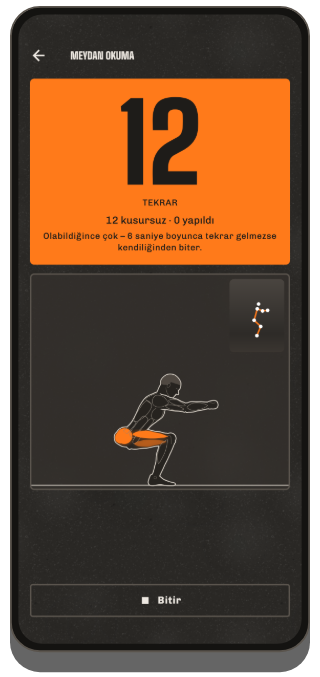
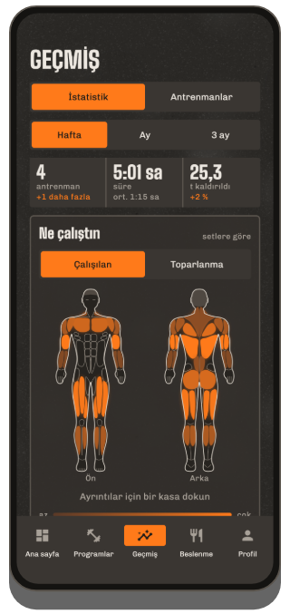
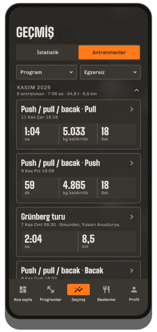
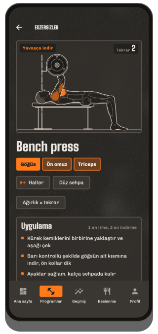
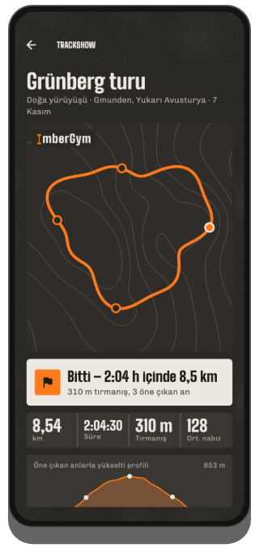
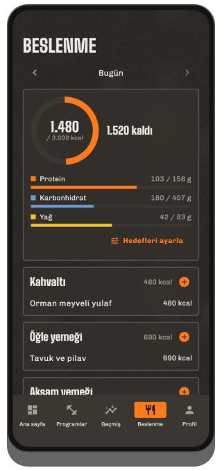
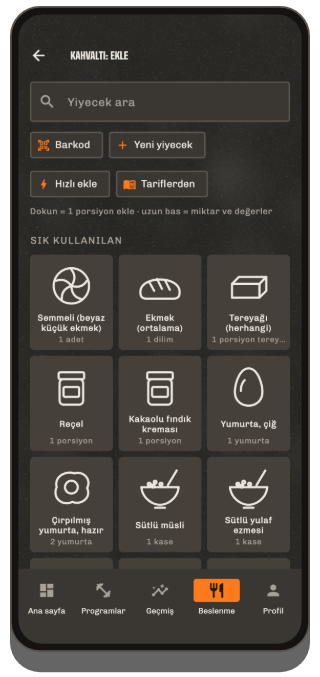
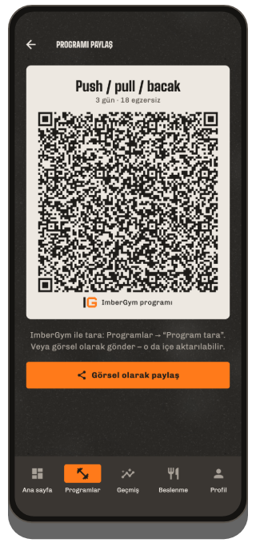
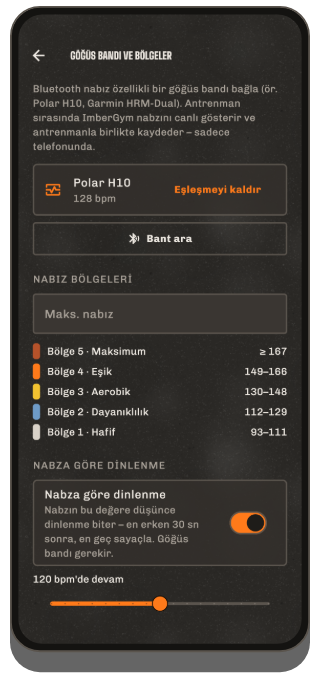
Açık havada
GPS kaydı
Koşu, bisiklet, doğa yürüyüşü: mesafe, tempo veya hız ve barometreyle yükselti. Ekran kapalıyken de kaydeder, trafik ışığında duraklar ve moladan sonra kendiliğinden devam eder.
Trackshow
Turun, en dik bölüm, en yüksek nokta ve en hızlı kilometre gibi öne çıkan anlarla eş yükselti eğrileri üzerinde bir kamera uçuşu olarak – hikâye görseli veya video olarak paylaş.
GPX dışa aktarma
Her kayıt GPX dosyası olarak dışa aktarılabilir ve başka uygulamalarda açılabilir.
Ücretsiz ve Premium
Ücretsiz
- Dinlenme sayaçlı tam antrenmanlar
- 5'e kadar kendi programın ve egzersizin, tüm şablonlar
- Animasyonlu egzersiz kütüphanesi
- Geçmiş, rekorlar, istatistikler, haftalık ve yıllık özet
- Health Connect ile saatten nabız, bölgeler ve nabza göre dinlenmeli canlı göğüs bandı
- Hatırlatıcılı takviyeler, kamerayla tekrar sayan meydan okuma
- Yiyecek kataloglu ve barkodlu kalori sayacı, kilo
- Programları QR kodla aktarma, antrenmanları kart olarak paylaşma
Premium
- Sınırsız kendi programın ve egzersizin, QR kodla program içe aktarma
- Vücut haritası, toparlanma, yağ oranı ve kilo gidişatı
- İnterval antrenman (Tabata ve dahası)
- GPS ile açık hava, video olarak Trackshow
- Saat uygulaması (Wear OS)
- Salonlar, üyelik kartları, gelişim fotoğrafları
- Tüm tarifler, dinamik kalori hedefi
Google Play üzerinden aylık veya yıllık abonelik ya da tek seferlik ömür boyu satın alma – fiyatlar uygulamada TL olarak görünür. İlk antrenmanından sonra 7 gün ücretsiz dene.
Sık sorulan sorular
Hesap gerekiyor mu?
Hayır. ImberGym kayıt olmadan ve kendi sunucusu olmadan çalışır.
Verilerim nerede saklanıyor?
Sadece telefonunda. Bulut, reklam veya analiz yok. Ayrıntılar gizlilik politikasında.
Uygulama çevrimdışı çalışır mı?
Evet. Sadece iki şey interneti kullanır: bilinmeyen bir barkodun Open Food Facts'te aranması ve bir GPS turunun yer adı (bunun için başlangıç noktası Android'in konum hizmetine gönderilir). Geri kalan her şey çevrimdışı çalışır.
Saatimin nabzı ImberGym'e nasıl gelir?
Android'in sağlık verisi deposu Health Connect üzerinden. Saat uygulamanda Health Connect'i aç ve “Nabız”a izin ver: Samsung Health, Garmin Connect, Fitbit, Polar Flow, Withings ve Zepp (Amazfit) gibi uygulamalar bunu yapabilir. Sonra ImberGym'de antrenman ayrıntılarında “Saatten nabzı yükle”ye dokun. Huawei: Huawei Health, Health Connect'e yazmaz; “Health Sync” uygulaması (Play Store) verileri aktarabilir: kaynak Huawei Health, hedef Health Connect, “Nabız”ı seç. İpucu: sürekli ölçmesi için saatte de antrenman başlat.
Hangi göğüs bantları çalışır?
Standart nabız profiline sahip her Bluetooth göğüs bandı, ör. Polar H9/H10, Garmin HRM-Dual veya Wahoo TICKR. Profilde “Göğüs bandı ve bölgeler” altında bir kez eşleştir: sonra her antrenmanda kendiliğinden bağlanır.
Bir programı nasıl paylaşırım?
Program düzenleyicide QR simgesine dokun ve kodu göster ya da görsel olarak gönder. Diğer kişi “Programlar” sekmesinde “Program tara” ile, görselden de tarar. Tüm program koddadır, hiçbir şey internete yüklenmez.
Telefon değiştirince verilerime ne olur?
Profilde “Veriler ve yedekleme” altında bir yedek oluştur ve ör. Google Drive'a kaydet. Yeni telefonda ilk ekranda “Yeni telefon mu? Yedeği geri yükle”yi seç.
Strong veya Hevy'den geliyorum: antrenmanlarımı aktarabilir miyim?
Evet. Eski uygulamanın CSV dışa aktarımını “Veriler ve yedekleme” → “Antrenmanları içe aktar” ile içe aktar. ImberGym egzersizleri eşleştirir ve önce bir önizleme gösterir.
Gelişim fotoğraflarım internete yükleniyor mu?
Hayır. Uygulamanın özel bir klasöründe saklanır, galeride görünmez ve Android yedeklerinden bile hariçtir.
Beslenmeyi gizleyebilir miyim?
Evet. Tüm bölüm profilde kapatılabilir: ImberGym saf bir antrenman günlüğü olur.
Verilerimi nasıl silerim?
Tek tek kayıtları doğrudan uygulamada; hepsini birden uygulamayı kaldırarak.